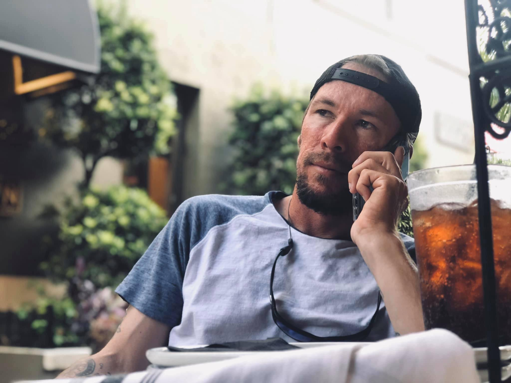

About
Native Media Group's mission is to capture the world's diverse fisheries in their natural habitat.

Photographer & Videographer
Digital Creator
When I started this journey into digital creation in 2017, I had no idea what I was doing. One thing I did know, is I had this uncontrollable desire to create; to try and tell a story with my visuals.
Fast forward to now, I have created many friendships in the process, traveled, and experienced things I never would have without picking up a camera. Most importantly, I've had a hell of a time along the way.
- Location: Cape Coral, Florida
- Professional Experience: Four Years
- Favorite Subject: Outdoors, Lifestyle, Fishing